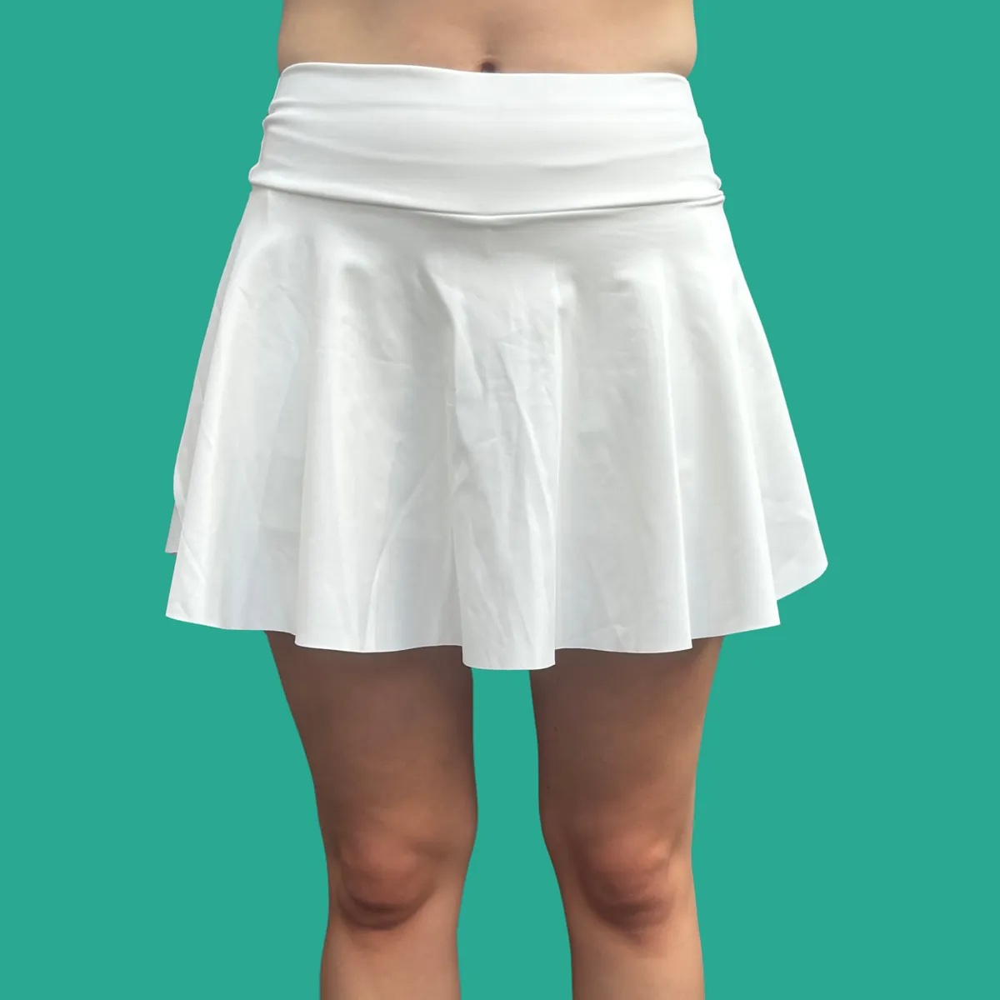

2-Pocket Sport Rok
Onze 2-Pocket Sport Rok is dé ideale short voor mensen met diabetes die hun insulinepomp veilig en comfortabel willen dragen tijdens het tennissen, padellen
- Gratis verzending in NL vanaf € 30, naar België vanaf € 75
- Levering binnen 2-3 werkdagen
- 14 dagen retourneren
- Vragen? Reactie binnen 24 uur via info@diabeticswear.com
Onze 2-Pocket Sport Rok is dé ideale short voor mensen met diabetes die hun insulinepomp veilig en comfortabel willen dragen tijdens het tennissen, padellen of sporten. Deze short heeft twee zakken aan de zijkant, perfect gepositioneerd om je pomp stevig op zijn plek te houden. Dankzij het discrete gaatje aan de binnenkant van de zak kan de infuusslang netjes worden doorgevoerd. Zo hangt er niets los en geniet je van volledige bewegingsvrijheid.
Tijdens het sporten biedt deze sport rok alle vrijheid die je nodig hebt. Je pomp blijft stevig op zijn plek. Met deze sport rok kies je voor veiligheid, functionaliteit en volledige vrijheid, allemaal in één stijlvol kledingstuk.
| Materiaal | 90% polyester, 10% elastaan |
|---|---|
| Maten | S / M / L / XL |
| Kleur | Wit |
| Aantal zakjes | 2 |
| Positie zakjes | Zijkant |
| Afmetingen zakjes | 130 mm x 85 mm |
| Wasvoorschriften | Zie label in Sport Rok |
Levering: we streven ernaar je bestelling binnen 2-3 werkdagen te bezorgen.
Nederland: gratis vanaf € 30, daaronder € 4,25.
België: gratis vanaf € 75, daaronder € 5,25.
Retour: binnen 14 dagen na ontvangst, ongebruikt en in de originele verpakking. Retourkosten zijn voor eigen rekening, tenzij het product defect of verkeerd geleverd is. Lees ons retourbeleid.
Wat klanten zeggen
“De bikershort zit erg fijn. De stof zit fijn wat prettig is met dit warme weer. Wel kruipt het broekje iets naar boven, dus de volgende keer zal ik wellicht een maat groter bestellen.”